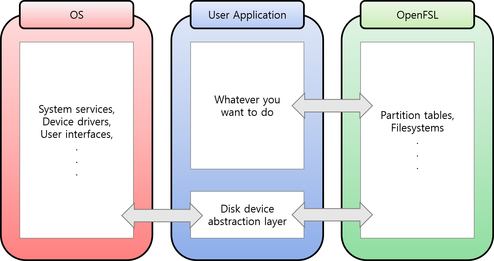
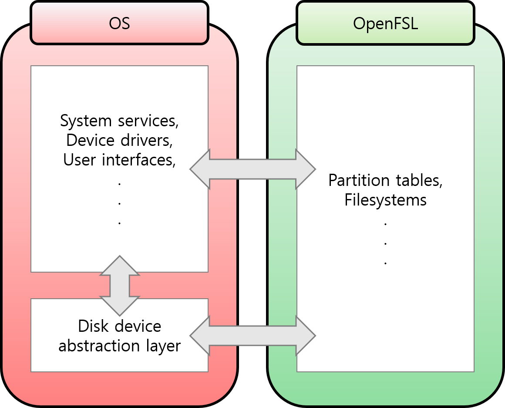

|
OpenFSL
An open source filesystem library
|


|
|
OpenFSL
An open source filesystem library
|
|

File systems:
| # | File System | Status |
|---|---|---|
| 1 | FAT32 | Almost finished |
| 2 | NTFS | In progress |
| OS | x86 | x86-64 |
|---|---|---|
| Windows-MSVC | ||
| Windows-MinGW | ||
| Linux | ||
| macOS |
| OS | x86 | x86-64 |
|---|---|---|
| Windows-MSVC | ||
| Windows-MinGW | ||
| Linux | ||
| macOS |
Sometimes you may want to modify the file system image. And sometimes you may want to mount and read or write unsupported filesystem. I created this project to do these things without installing and mounting with libfuse.
Cross-compiling is not possible at this time because there are so many OS-specific build tasks. This library provides only file system control, so you have to implement the abstraction layer for the library. However, in this regard, it can have the advantage of being able to integrate into the operating system.

In this image, the disk device abstraction layer is in user application block. But if I transform this image a little bit...

You can integrate the library to your operating system!
| Platform | Windows | Linux(Ubuntu) | FreeBSD | macOS |
|---|---|---|---|---|
| x86(i686) | O | O | O | X |
| AMD64(x86-64) | O | O | O | O |
| aarch64 | X | O | X | X |
| armel (ARM 32-bit LE[^le]) | X | X | X | |
| ppc64el (PowerPC 64-bit LE[^le]) | X | X | ||
| ppc64 (PowerPC 64-bit BE[^be]) | X | |||
| s390x | X |
[^note]: 'O' means supporting, 'X' means not tested and not supported, blank means unable to build. [^le]: Little-Endian system. [^be]: Big-Endian system
Go to OpenFSL Mainpage to see Documents.
OpenFSL and its documents are licensed under the BSD-3-Clause.
See the LICENSE file for more details.
 1.8.17
1.8.17